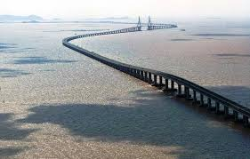

Changhua–Kaohsiung Viaduct |
|
Changhua–Kaohsiung Viaduct

The Changhua–Kaohsiung Viaduct is the second-longest bridge in the world and a crucial part of Taiwan's infrastructure. Key details include:
This impressive viaduct significantly reduces travel time across western Taiwan while preserving valuable agricultural land beneath it. It's a testament to Taiwan's commitment to efficient transportation and environmental consideration. |
|
|
© 2024 World's Biggest Bridges. All rights reserved. |
|